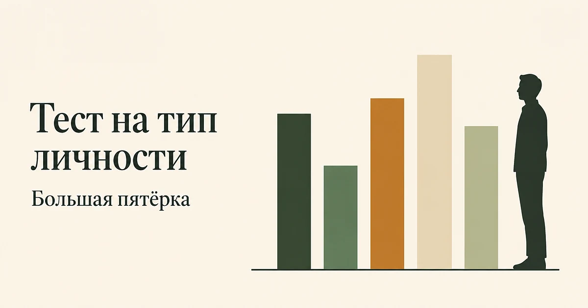

Главная → Тесты → Тест на тип личности
Тест на тип личности (Большая пятёрка)
Обновлено: 21.08.2026 · 4 минуты на прохождение
Это тест на черты личности по модели «Большая пятёрка» — той самой, на которой держится современная психология личности. Двадцать утверждений дают пять независимых шкал: экстраверсия, доброжелательность, добросовестность, нейротизм и открытость опыту. Результат — не ярлык из четырёх букв, а профиль: пять полос разной высоты. Бесплатно, без регистрации, ответы остаются в браузере.

Что такое Большая пятёрка
Модель появилась не из теории, а из языка. Исследователи исходили из простой мысли: если какая-то особенность людей действительно важна, язык обязательно придумает для неё слово. Они взяли тысячи слов, которыми люди описывают друг друга, и посмотрели, какие из них устойчиво встречаются вместе. Раз за разом, на разных языках и в разных культурах, выделялись одни и те же пять групп. Их и назвали Большой пятёркой.
Отсюда главное отличие от популярных типологий: пятёрку не придумали — её нашли в данных. Каждая черта здесь не коробка, в которую человека кладут целиком, а непрерывная шкала: у всех есть немного экстраверсии и немного нейротизма, вопрос только в том, где вы на каждой из пяти линий.
Мы используем версию Mini-IPIP из двадцати пунктов. Сами пункты взяты из открытого банка International Personality Item Pool — он помещён в общественное достояние, поэтому мы можем публиковать их дословно. Это, кстати, причина, по которой на сайте нет MBTI: его пункты защищены, и выложить их было бы некорректно.
Что означает каждая из пяти шкал
Ни одна из пяти черт не «хорошая» и не «плохая» — у каждого полюса свои сильные стороны и своя цена. Это принципиально: тест не говорит, каким быть, он описывает, какой вы сейчас.
| Черта | Высокий полюс | Низкий полюс |
|---|---|---|
| Экстраверсия | Заряжается от людей, легко заговаривает, ищет активность | Восстанавливается в одиночестве, бережёт социальную энергию |
| Доброжелательность | Легко сочувствует, идёт навстречу, избегает конфликта | Прямолинеен, готов спорить, труднее продавить |
| Добросовестность | Планирует, доводит до конца, держит порядок | Гибок, спонтанен, легче меняет курс |
| Нейротизм | Острее реагирует на стресс, дольше переживает | Ровнее в напряжении, быстрее возвращается в равновесие |
| Открытость опыту | Любит новое, абстрактное, необычное | Ценит понятное и проверенное, практичен |
Отдельно про нейротизм, потому что название пугает сильнее, чем следует. Это не диагноз и не «невроз»: черта описывает, насколько сильно и надолго вас задевают неприятности. Высокий нейротизм — распространённая особенность, а не болезнь. Но он действительно связан с уязвимостью к тревоге и подавленности, поэтому если высокий балл совпадает с тем, что вам тяжело прямо сейчас, честнее посмотреть на состояние отдельно: для этого есть GAD-7 и PHQ-9. Черта — это фон, состояние — это то, что происходит сегодня, и путать их не стоит.
Почему «тип личности» — не совсем верное слово
Запрос звучит как «тест на тип личности», и мы называем страницу так же, потому что именно этими словами люди ищут. Но строго говоря, типов Большая пятёрка не выдаёт, и это её сильная сторона.
Типологии вроде MBTI режут каждую шкалу пополам и выдают ярлык: экстраверт или интроверт, логик или этик. Проблема в том, что реальные баллы распределены как рост — большинство людей в середине, а не на полюсах. Человек с результатом чуть выше середины и человек чуть ниже получат противоположные буквы, хотя различаются они на волосок. Отсюда и известная претензия к типологиям: при повторном прохождении через несколько недель заметная доля людей получает другой тип. Меняется не личность, а то, по какую сторону от черты оказался почти одинаковый балл.
Профиль из пяти полос этой проблемы лишён: он показывает положение, а не сторону. Поэтому в исследованиях и в подборе персонала используют именно пятёрку, а типологии остаются развлечением — приятным, но не тем, на что стоит опираться в решениях о себе.
Что делать с результатом
Первое и главное: ничего чинить не нужно. Тест не находит поломок — черты не бывают неправильными, и «поднимать» экстраверсию так же бессмысленно, как поднимать рост.
Полезнее другое — посмотреть, где ваш профиль расходится с тем, как устроена ваша жизнь. Именно из этого расхождения обычно и растёт усталость. Низкая экстраверсия при работе, состоящей из встреч, — это не недостаток характера, а неподходящий режим: восстановление вам нужно в тишине, а его нет в расписании. Высокая добросовестность рядом с размытыми задачами и вечно меняющимися сроками даёт хроническое напряжение, потому что довести до конца физически невозможно. Высокий нейротизм в среде с постоянной неопределённостью изматывает быстрее, чем у соседа по кабинету, и это не слабость, а другой порог.
Второе, что стоит сделать, — проверить свою трактовку на близком человеке. Самоотчёт систематически смещён: мы неплохо знаем свои намерения и плохо — как выглядим со стороны. Спросите кого-то, кто вас давно знает, совпадает ли описание. Расхождение обычно и есть самое интересное место.
И третье. Черты предсказывают склонность, а не поступки. Низкая добросовестность не мешает выполнять обещания — просто на это уходит больше внешних опор: списки, напоминания, договорённости с другими. Понимание своей черты нужно не для оправдания, а для того, чтобы выбрать подпорки, которые вам действительно нужны, вместо тех, что работают у других.
Насколько тесту можно доверять
Большая пятёрка — самая проверенная модель личности из существующих: структура из пяти факторов воспроизводится на десятках языков, черты умеренно предсказывают учебные и рабочие результаты, здоровье и устойчивость отношений, а наследуемость каждой из них подтверждена исследованиями близнецов. Пункты Mini-IPIP взяты из открытого банка IPIP и проверены на больших выборках.
Ограничения существенные, и о них честно сказать важнее, чем о достоинствах. Двадцать пунктов — это короткая версия: по четыре утверждения на черту дают заметно более грубую оценку, чем полные опросники на сто и более пунктов. Результат стоит читать как «скорее выше середины» или «скорее ниже», а не как точную цифру. Шкала целиком построена на самоотчёте и чувствительна к тому, каким вы хотите себя видеть. И границы диапазонов у нас описательные: мы не сравниваем ваш балл с нормами по стране, потому что валидированных русскоязычных норм для этой короткой версии в открытом доступе нет, а выдумывать проценты — значит делать вид, что точность выше реальной.
Есть и одна особенность именно этой короткой версии, о которой стоит знать заранее. В шкале открытости опыту три утверждения из четырёх сформулированы «наоборот» — через отрицание, — тогда как в остальных четырёх чертах прямых и обратных пунктов поровну. Так устроен оригинал, и мы его не переделывали: подстроенный «под себя» инструмент перестаёт быть инструментом. Но практическое следствие есть: если вы склонны со всем соглашаться, ваш балл по открытости выйдет ниже реального, а если склонны со всем спорить — выше. На остальных четырёх шкалах эта склонность взаимно гасится.
Наконец, черты умеренно меняются со временем — это установленный факт, а не утешение. С возрастом у большинства людей растёт добросовестность и доброжелательность и снижается нейротизм. Так что профиль — это снимок сегодняшнего дня, а не приговор на всю жизнь.
Узнали в описании что-то, что мешает жить, — например, что самокритика съедает больше сил, чем стоило бы? Расскажите об этом. Анонимно, без регистрации, в любое время суток.
Попробовать бесплатноЧастые вопросы
Чем Большая пятёрка отличается от MBTI?
Большая пятёрка даёт пять непрерывных шкал, MBTI — ярлык из четырёх букв. Разница практическая: пятёрка показывает, насколько выражена черта, а типология делит людей пополам по каждой шкале, хотя большинство находится в середине. Из-за этого при повторном прохождении MBTI заметная доля людей получает другой тип. Большая пятёрка выведена из данных и используется в исследованиях, MBTI построен на теории и в научной работе почти не применяется.
Можно ли по этому тесту определить свой тип личности?
Строго говоря, типов Большая пятёрка не выдаёт — она даёт профиль из пяти шкал. Мы называем страницу «тестом на тип личности», потому что люди ищут именно этими словами, но результат вы получите в виде пяти полос разной высоты, а не одного названия. Это не упрощение модели, а её принципиальное устройство: каждая черта — линия, на которой вы где-то находитесь.
Высокий нейротизм — это тревожность или депрессия?
Нет. Нейротизм — черта личности: она описывает, насколько сильно и надолго вас задевают неприятности. Это фон, а не состояние. Высокий нейротизм действительно связан с большей уязвимостью к тревоге и подавленности, но сам по себе не означает ни того, ни другого. Если вам тяжело прямо сейчас, состояние стоит измерить отдельно шкалами GAD-7 или PHQ-9.
Меняются ли черты личности с возрастом?
Да, умеренно. Исследования показывают устойчивую закономерность: с возрастом у большинства людей растёт добросовестность и доброжелательность, а нейротизм снижается. Изменения идут медленно, годами, и обычно не переворачивают профиль целиком. Поэтому результат теста — снимок сегодняшнего дня, а не характеристика, выданная навсегда.
Материал подготовлен командой AI Therapist. Мы приводим пункты Mini-IPIP из открытого банка International Personality Item Pool без изменения формулировок и честно указываем ограничения короткой версии: границы диапазонов у нас описательные, а не нормативные. Тест носит просветительский характер, не является психодиагностическим заключением и не может служить основанием для решений о приёме на работу или лечении.
Источники: International Personality Item Pool — открытый банк пунктов (public domain).
Кто отвечает за содержание сайта и по каким правилам мы готовим материалы — на странице о проекте.